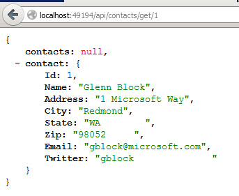
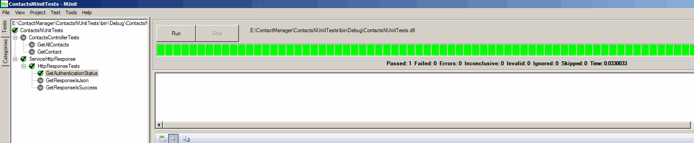

ASP.NET Web API is a light weight framework for building and consuming Http services that can reach variety of clients that is browsers, phones and tables. Web API is flexible such a way service can be self hosted or deployed in another applicatio as requried.
The objective of this simple is to provide insight into testing Web API application using NUnit. Note that Controller testing i.e., DAL (Data access layer) is separated from actual Http service testing.
Description
The solution contains two projects.
ContactManager web application is a ASP.NET Web API application, which retrieves entity and returns DTO to the client. In Web API controller class repository(Interface) from data layer is injected, Unity container is used for DI. After retrieving data from data layer, it is mapped to an instance of DTO (which is in model folder) and returned to the client. Automapper is used for Object to object mapping.
Note that Data Access Layer (DAL) is implemented in Model folder of the ASP.NET Web API project for demo sake. It is a standard practice to have DAL is separate class library project where N-Tier practice is followed.
ContactsNUitTests project contains test cases for ContactsController using NUnit and service HTTP response specific cases.
When you run the application and navigate to uri http://<portnumber>/api/contacts/get a list of contact is displayed in Json format. Uri http://<portnumber>/api/contacts/get/1 displays contact with id 1.
When the unit tests are run from the Visual Studio > Tools menu or as a separate instance all tests should pass based on your service port number update in Web.config.

When the NUnit is added through Visual Studio Add In manager, choosing the Tools menu in Visual studio and running the tests will show the out put as shown below.

private HttpClient client;
private HttpResponseMessage response;
[SetUp]
public void SetUP()
{
client = new HttpClient();
client.BaseAddress = new Uri(ConfigurationManager.AppSettings["serviceBaseUri"]);
response = client.GetAsync("contacts/get").Result;
}
private HttpClient client; private HttpResponseMessage response; [SetUp] public void SetUP() { client = new HttpClient(); client.BaseAddress = new Uri(ConfigurationManager.AppSettings["serviceBaseUri"]); response = client.GetAsync("contacts/get").Result; }
Microsoft's Unity framework is utilised for DI (IoC)